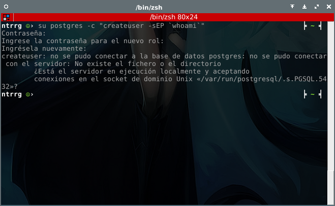

Odoo
9.0
| Date: | 2016-08-27 |
|---|---|
| Version: | 0.3.0 |
| Author: | Miguel Angel Rivera Notararigo (ntrrg) <ntrrgx@gmail.com> |
| Licence: | MIT |

Odoo es un ERP, es decir, un software para dar soluciones empresariales, aunque también ofrece otra gran cantidad de utilidades; si quieren saber más sobre lo que es y lo que ofrece, pueden ir al sitio oficial o a su página en Wikipedia.
Yo uso Debian 8 (Jessie) por lo que este artículo está orientado a esta
distribución, pero es muy probable que sirva (exceptuando los comandos del
Shell) en cualquier sistema operativo con Python instalado; todos los
comandos que requieren privilegios de superusuario tienen sudo en
ellos, si el usuario que usan no pertenece al grupo sudo pueden
ejecutarlos con el usuario root, los demás comandos deben ser
ejecutados por un usuario común.
Tabla de contenido
1. Instalación
1.1. Dependencias
Verificar que todo esté actualizado e instalar lo que necesita Odoo del sistema operativo:
sudo apt-get update && sudo apt-get upgrade
sudo apt-get install git libfreetype6-dev libjpeg-dev libldap2-dev \ postgresql-server-dev-all python-dev python-passlib python-virtualenv \ libpng12-dev libsasl2-dev libxslt1-dev npm postgresql zlib1g-dev
Para que Odoo pueda comunicarse con el motor de tipografías FreeType y el interprete de NodeJS se deben crear algunos enlaces simbólicos:
sudo ln -s /usr/include/freetype2 /usr/include/freetype
sudo ln -s /usr/bin/nodejs /usr/bin/node
sudo npm install -g less less-plugin-clean-css
Instalar wkhtmltopdf:
Nota
Si no usan Debian, pueden descargar la versión que se adapte mejor a su distribución desde aquí.
wget -qO - http://goo.gl/H7xNAq > wkhtmltopdf.deb # 32bits wget -qO - http://goo.gl/kYVtMI > wkhtmltopdf.deb # 64bits
sudo dpkg -i wkhtmltopdf.deb
rm wkhtmltopdf.deb
Odoo no permite establecer conexiones a la base de datos con el usuario predefinido de PostgreSQL, por lo que debe crearse uno para el usuario que lo ejecute:
sudo passwd postgres
su postgres -c "createuser -sEP `whoami`"
1.2. Entorno virtual
No es obligatorio crear un entorno virtual, pero es recomendable hacerlo para
aislar los paquetes Python usados por Odoo y poder usar pip sin
privilegios de superusuario; para preparar un entorno virtual hay ejecutar los
siguientes comandos:
cd
virtualenv -p python2.7 odooEnv
cd odooEnv
source bin/activate # Agregará (odooEnv) al PROMPT
pip install Babel==1.3 Jinja2==2.7.3 Mako==1.0.1 MarkupSafe==0.23 \ Pillow==2.7.0 Python-Chart==1.39 PyYAML==3.11 Werkzeug==0.9.6 \ argparse==1.2.1 decorator==3.4.0 docutils==0.12 feedparser==5.1.3 \ gdata==2.0.18 gevent==1.0.2 greenlet==0.4.7 jcconv==0.2.3 lxml==3.4.1 \ mock==1.0.1 ofxparse==0.14 passlib==1.6.2 psutil==2.2.0 psycogreen==1.0 \ psycopg2==2.5.4 pyPdf==1.13 pydot==1.0.2 pyparsing==2.0.3 pyserial==2.7 \ python-dateutil==2.4.0 python-ldap==2.4.19 python-openid==2.2.5 \ pytz==2014.10 pyusb==1.0.0b2 qrcode==5.1 reportlab==3.1.44 \ six==1.9.0 suds-jurko==0.6 vatnumber==1.2 vobject==0.6.6 wsgiref==0.1.2 \ xlwt==0.7.5 requests==2.6.0 watchdog
1.3. Descargar Odoo
cd ~/odooEnv
git clone git@github.com:odoo/odoo.git # con SSH (recomendado) git clone https://github.com/odoo/odoo.git # con HTTP
2. Ejecución
Odoo posee un script que permite iniciar una instancia de él, podemos alterar su comportamiento por medio de opciones al estilo comandos Unix. Para iniciarlo de la manera más sencilla, basta con entrar en el repositorio y hacer uso del script:
Nota
En caso de que no esté activo el entorno virtual (el PROMPT no tiene
(odooEnv)), ejecutar el comando:
source ~/odooEnv/bin/activate
cd ~/odooEnv/odoo
./odoo.py
2.2. Opciones
Nota
Solo se muestran las opciones más relevantes, para obtener la lista
completa se puede ejecutar el script con la opción -h.
| --xmlrpc_port <puerto> | |
Puerto en el que se montará el servicio, su valor
predeterminado es 8069. | |
| --logfile <archivo> | |
Archivo donde se guardará el registro de actividades
hechas por Odoo, su valor predefinido es
/dev/stdout. | |
| --addons-path <carpetas> | |
| Lista de carpetas separadas por coma en las que se buscarán módulos. | |
| --dev | Activa el modo desarrollador, útil para evitar reiniciar el servicio cuando se está trabajando sobre un módulo. |
| -d <base de datos>, --database <base de datos> | |
| Base de datos a usar, es equivalente a seleccionar una base de datos en la interfaz gráfica. | |
| --db_filter <expresión regular> | |
Solo muestra las bases de datos cuyos nombres
coincidan con <expresión regular>. | |
| -r <usuario>, --db_user <usuario> | |
| Usuario PostgreSQL con el que se conectará, por defecto intenta conectarse con el nombre del usuario que ejecuta el servicio. | |
| -w <contraseña>, --db_password <contraseña> | |
| Contraseña del usuario PostgreSQL. | |
| --db_host <host> | |
| Host en el que se encuentra el servidor PostgreSQL. | |
| --db_port <puerto> | |
| Puerto en el corre el servidor PostgreSQL. | |
| --db_template <plantilla> | |
| Plantilla con la que se crearán las bases de datos. | |
| -i <módulos>, --init <módulos> | |
Lista de módulos separados por coma a
instalar o all, es equivalente a
instalar módulos desde la interfaz gráfica;
necesita la opción -d. | |
| -u <módulos>, --update <módulos> | |
Lista de módulos separados por coma a
actualizar o all, es equivalente a
actualizar módulos desde la interfaz
gráfica; necesita la opción -d. | |
2.2.1. Archivo de configuración
Es posible definir las opciones anteriores por medio de un archivo especial, que será leido por el script y de esta manera se evitará escribir todas las opciones nuevamente en cada inicio del servicio. El script permite usar las siguientes opciones para trabajar con este archivo:
| -c <archivo>, --config <archivo> | |
Archivo de configuración, su valor
predefinido es ~/.openerp_serverrc. | |
| -s, --save | Guarda la configuración actual en el archivo especificado en la
opción -c. |
Las opciones nombradas en Opciones se definirían de la siguiente manera:
[options] xmlrpc_port = <puerto> logfile = <archivo> addons_path = <carpetas> dev_mode = True | False db_name = <base de datos> dbfilter = <expresión regular> db_user = <usuario> db_password = <contraseña> db_host = <host> db_port = <puerto> db_template = <plantilla>
3. Módulos
Los módulos son elementos (aplicaciones, temas, etc...) que pueden agregar funcionalidades o alterar el comportamiento/aspecto de Odoo. Su estructura, a pesar de seguir el patrón MVC, puede variar según la finalidad con la que se cree, pero generalmente debería ser algo como:
. ├─ controllers/ │ ├─ __init__.py │ └─ main.py ├─ data/ │ ├─ <modelo>_data.xml │ └─ <modelo>_demo.xml ├─ models/ │ ├─ __init__.py │ └─ <modelo>.py ├─ static/ │ ├─ css/ │ ├─ img/ │ └─ js/ ├─ views/ │ ├─ <modelo>_templates.xml │ └─ <modelo>_views.xml ├─ __init__.py └─ __openerp__.py
3.1. Modelos
├─ models/ │ ├─ __init__.py │ └─ <modelo>.py
Son la representación de los componentes de un sistema por medio de clases
Python que heredan de la clase openerp.models.Model, ejemplo:
from openerp.models import fields, Model class Persona(Model): u"""Representación de persona.""" _name = "persona" _description = u"Representación de persona." nombre = fields.Char(string="Nombre") apellido = fields.Char(string="Apellido")
4. Solución de errores
4.1. Instalación
4.1.1. Instalando wkhtmltopdf
Si se muestra algún error de dependencias, hay que ejecutar el comando:
sudo apt-get install -f
4.1.2. Creando el usuario PostgreSQL
Este error se genera porque el servicio de PostgreSQL no está activo, para arreglarlo basta con iniciar el servicio:
sudo /etc/init.d/postgres restart
[Regresar]
4.2. Ejecución
4.2.1. Procesando imágenes
Para solucionar este error se debe reinstalar PIL con los siguientes comandos:
rm -r OdooEnv/lib/python2.7/site-packages/PIL*
wget http://effbot.org/downloads/Imaging-1.1.7.tar.gz # 32bits wget http://effbot.org/downloads/Imaging-1.1.7-x64.tar.gz # 64bits
tar -xvf Imaging-1.1.7*
cd Imaging-1.1.7
python setup.py install
cd ..
rm -r Imaging-1.1.7*
5. Referencias
Installing Odoo. https://www.odoo.com/documentation/9.0/setup/install.html#source-install
Command-line interface: odoo.py. https://www.odoo.com/documentation/9.0/reference/cmdline.html